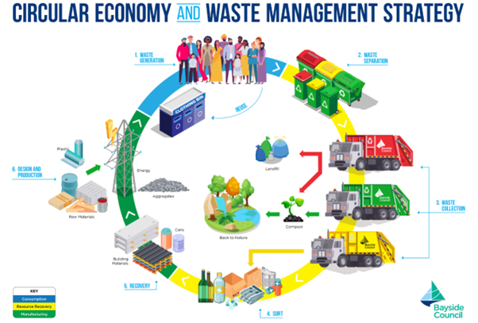
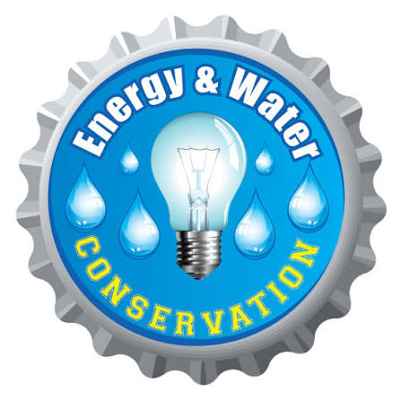
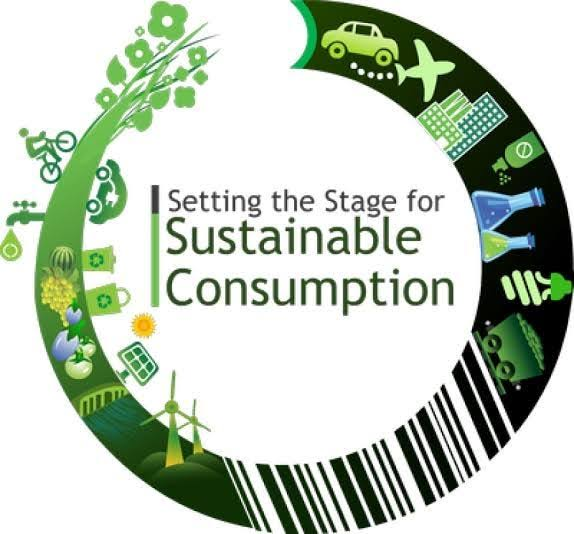
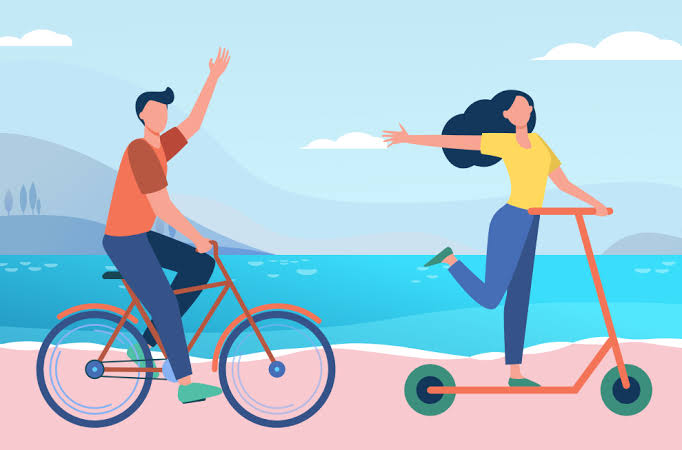

Focus on minimizing waste through the 5 R's (Refuse, Reduce, Reuse, Recycle, Rot), saving energy in your home, and supporting sustainable local options in Mount Roskill.

Air Dry Clothes: Utilize a clothesline or drying rack instead of relying on an electric dryer to lower your power bill and preserve your fabrics.Energy Audit: Switch to LED lighting and ensure your heating or cooling systems are set to efficient temperatures (e.g., heating to 18-20°C in winter).

Plant-Rich Meals: Significantly reduce your carbon footprint by incorporating more plant-based meals into your weekly die

Public Transport: Take advantage of Auckland's rail and bus networks, including nearby services like the train at the Mt Albert or Baldwin Avenue stations.Active Transport:

🐛Kaitiakitanga
© 2026 EcoTrack NZ - Building eco-friendly habits for Aotearoa